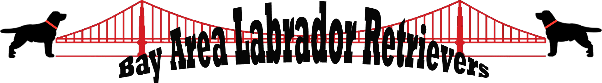

Welcome to Bay Area Labradors!!
We are a small family breeder of high quality AKC
registered Black and Yellow Labradors. We devotedly breed and raise
gorgeous English labradors.They are all family raised in our loving
home. Reserve one today!!


Introducing the Labrador Retriever:
Since its inception over 60 years ago, The Labrador Retriever Club has been dedicated to preserving the integrity of the breed as a retriever gun dog that is equally at home as a hunting companion, at a dog show, or sleeping on a child's bed. Given the breed's popularity, it is remarkable the degree to which Labradors have retained their ability as working retrievers. That achievement is a measure of the health and vitality of the breed. As a new Labrador Retriever owner, on our website we have provided you with some basic information about the breed and how to care for your new canine companion.
Our English Labrador Retrievers:
General Appearance
A Labrador Retriever is a strongly built, medium-size,
short-coupled dog possessing an athletic, well-balanced
conformation that enables it to function as a retrieving gun dog
for long hours under difficult conditions. The most distinguishing
characteristics of the Labrador Retriever are its short, dense
weather-resistance coat; and "otter" tail; a clean-cut head with
broad back skull and moderate stop; powerful jaws; and its "kind,"
friendly eyes that express character, intelligence and good
temperment.
The Labrador Retriever coat colors, as
recognized in the official Standard, "are black, yellow and
chocolate. Any other color or a combination of colors is
disqualification." A small white spot on the chest is permissible,
but not desirable. White hairs from aging or scarring are not to be
misinterpreted as brindling. Black-Blacks are all black.
Yellow-Yellows may range in color from fox-red to light cream, with
variations in shading on the ears, back, and underparts of the dog.
Chocolates can vary in shade from light to dark chocolate.
History
Despite the contradiction in name, the Labrador Retriever's origins
can be found in Canada. Early in the 19th century an Englishman,
Lord Malmsbury, purchased several Labradors (or Lesser Newfoundland
or St. John's Dogs as they were called) from Newfoundland. He was
attracted to the dogs because of their highly developed retrieving
instinct and their willingness to please, and he developed a
breeding program to preserve those characteristics.
From
this early beginning the dog developed into the Labrador of
today-one that excels in a variety of uses beyond the hunting
field. The adaptability and trainability of the breed finds it
utilized in many dog guide and assistance programs, as well as
excelling in substance detection or search and rescue work. And, of
course, with proper training and socializing, Labrador Retrievers
are wonderful family companions.
Goal
Our goal as a breeder is to provide families with hand raised, gentle, attentive and easy to train personalities with lots of beauty. We strive to produce litters of excellent quality puppies that are suitable for the whole family to enjoy as companions and field dogs.
Health
All of our puppies will have their first physical exam done by a profesional vet and will be up to date on all first sets of shots and wormings.
Trust
Phasellus eget enim eu lectus faucibus vestibulum. Suspendisse sodales pellentesque elementum.
Promises
Each puppy will go home with a portfolio that includes pictures of him/her and the litter, a health guarantee, a health certificate and exam from our Vet, copies of pedigrees of both parents.